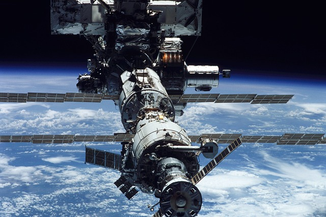

La conquête spatiale pour les noobs!
Accueil
Galeries
Accidents
Incidents
Contact
URSS
USA
Programmes spatiaux
Sondes spatiales
Missions sur Mars

Articles du moment
Articles du moment
Liens utiles
Site officiel de l'ESA
Site officiel de la NASA
Notre système solaire
Visitez les planètes du
système solaire avec Google